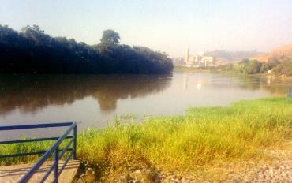
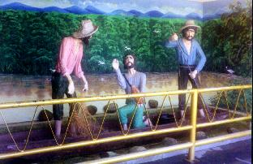
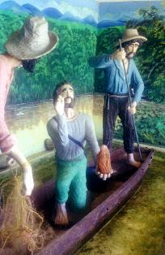

PREPARATIVOS- Estavam no anoitecer do dia 16 de Outubro
de 1717 e a temperatura era
PREPARATIVOS- Estavam no anoitecer do dia 16 de Outubro
de 1717 e a temperatura era 
agradável, com uma suave brisa que agitava
as ramadas das árvores. Os pescadores fizeram seus preparativos,
colocaram as canoas no Rio Paraíba e remaram em busca dos
peixes, fazendo os primeiros lanços de rede no porto de José
Correia Leite. Com bastante habilidade e perícia, lançavam e recolhiam
a rede em diversos lugares, mas os peixes não apareciam. As horas corriam
ligeiras, o relógio já marcava 23 horas, sem que as redes dos barcos
espalhados em diferentes áreas, conseguissem trazer um peixe
sequer. Desiludidos, quase todos os pescadores abandonaram a
pescaria aproximadamente a meia-noite, certos de que aquele dia
não era próprio para a pescaria, como diziam: " os peixes tinham sumido do
rio".
Só permaneceu um barco, com Domingos Alves Garcia, seu filho
João Alves e Felipe Pedroso, cunhado de
Domingos e tio de João.
PORTO DE ITAGUAÇÚ- Já rompia o dia com o clarão dos primeiros raios de sol, e os três
pescadores estavam bem distantes do local onde iniciaram a pescaria.
Aproximavam-se do porto de Itaguaçu, sem que seus esforços tivessem
sido recompensados com uma boa quantidade de peixes. O Rio Paraíba
que era o sustento deles, nunca tinha se portado assim, tão hostil.
Mas não podiam desanimar, porque precisavam do dinheiro
que receberiam com a venda dos peixes. Tinham sérios
compromissos à serem atendidos e também, não é todo
dia que chega um visitante ilustre em Guaratinguetá para
ensejar-lhes a oportunidade de comercializar muitos peixes.
Era uma chance que precisava ser aproveitada. Por causa da
visita do Governador da Capitania, tinham sido recomendados
pelo pessoal da Câmara:
"se levassem muitos peixes seriam bem remunerados".

João Alves, o
mais jovem, chegou a exclamar: "será que pescaram todos os peixes do rio e esqueceram
de nos avisar?" E
no silêncio da madrugada só se ouvia o riso humorado dos três,
que sem compreenderem o que acontecia, comentavam o
fato com tranquilidade de espírito e plena aceitação da
ocorrência , sem apelações, impropérios ou qualquer
manifestação rancorosa. Sem dúvida, precisavam dos peixes
e lutavam tenazmente para consegui-los, mas aceitavam com
dignidade o fracasso da pescaria.
Agora estavam
no porto de Itaguaçú ... O suor brotava de suas frontes morenas, queimadas
pelo sol, enquanto perseverantemente insistiam na faina de lograr
êxito na pescaria. E aí aconteceu o imprevisível...
ACONTECEU O MILAGRE
- João Alves após lançar a rede
em busca dos peixes, depara ao recolhê-la, com o corpo de uma pequena
imagem de barro, sem cabeça, embaraçada nas malhas da rede. Examinou-a
com cuidado e mostrou-a aos outros dois, que como ele, ficaram admirados
com o achado. Envolveu-a na sua camisa e colocou-a num canto do barco.
Remando um pouco mais para alcançar outra área, decidiu lançar a rede
em busca dos peixes. Seus companheiros silenciosamente observavam.
Outra surpresa ... Uma pequena bola de barro, bem menor que as
malhas da rede, vinha embaraçada nela. Cuidadosamente removeu o
lodo com a mão e viu tratar-se da cabeça da imagem! Era uma
Santa feita de barro escuro... Era a imagem de uma Senhora...
Os três estavam
admirados!... Como foi possível as malhas da rede reter aquela pequenina
cabeça de imagem? Mas ela estava ali, desafiando as leis da
física e das probabilidades, uma linda imagem escura, com
feições delicadas, 39 centímetros de comprimento e pesando um
pouco mais de quatro quilos. Era a Senhora "Aparecida" que surgia num véu de espumas das
águas barrentas do Rio Paraíba.
Quem a teria sepultado
naquele leito, adormecida em espesso lençol de água doce? Algum ladrão
sacrílego que a arremessou ali envolto pelo remorso, ou para
se libertar do furto sacrílego que lhe corroia a alma? Ou, quem sabe,
alguma pessoa de fidelidade dúbia, que não recebendo o benefício de
uma promessa que fez a DEUS, vingou-se grosseiramente, desabafando sua
decepção doentia na pequena imagem, quebrando e lançando-a no
rio?
Um verdadeiro
mistério... Ninguém sabe como foi parar ali aquela imagem. Um fato que
desafia a toda imaginação e que jamais foi desvendado, apesar de
acuradas e perspicazes investigações.
A segunda peça
encontrada, depois de limpa, foi também envolvida na camisa de João Alves
e juntas, ficaram depositadas num cantinho do barco. Uma atmosfera
de mistério cercou o espírito dos três homens... Estavam
surpresos e maravilhados com o que acabava de lhes suceder. Era
portanto, muito natural que existisse no íntimo de cada um, uma
imensa expectativa ... E agora, o que irá acontecer? Será que
nos próximos lanços, as nossas redes trarão mais alguma "novidade" para o barco?
Sem dúvida, era
um grande suspense que os deixou momentaneamente pensativos e indecisos,
sem palavras e sem qualquer ação. Mas, a resposta àquela indagação
só poderia vir se eles fizessem novos lanços com a rede. E
por isso mesmo, a decisão não se fez esperar e a rede foi
atirada novamente ao rio. Repleto de expectativa e curiosidade,
lentamente João Alves começou a recolhê-la, e logo de inicio
observou algo anormal, um peso volumoso que a pressionava para
baixo e quase arrastava o barco. Com dificuldade, os três se
juntaram e puxaram a rede retirando-a do rio. Que maravilha! ...
Estava repleta de peixes... Tão copiosa tornou-se a pesca, que
em poucos lanços, encheu a canoa com um pescado de
excelente qualidade. E tantos eram, que logo encerraram a pescaria,
porque o barco já estava quase afundando com o peso.
Antes de se dirigirem
à Câmara Municipal a fim de entregarem os peixes, levaram a imagem
para casa, deixando-a aos cuidados de Silvana da Rocha Alves,
esposa de Domingos, mãe de João e irmã de Felipe.
SIGNIFICADO DO MILAGRE
- Foi um prodigioso
milagre, análogo àquele que o Novo Testamento descreve, ocorrido
nas águas do Mar de Tiberíades (Lago de Genesaré), na Galiléia.
JESUS Ressuscitado, para se fazer conhecido pelos Apóstolos,
mandou que lançassem a rede à direita da barca. Eles embora
titubeantes atenderam ao desconhecido (porque não sabiam que
era JESUS) e tiveram uma encantadora surpresa, ao verem a rede
milagrosamente cheia de peixes de primeira qualidade, depois de
passarem uma cansativa noite de labuta, sem terem pescado
nenhum.(Jo 21,1-14)
Aqui, para nós
brasileiros, a pesca milagrosa foi o sinal sensível que confirmava a presença
Divina
entre nós. O encontro da pequena imagem, serviu para
identificar e nos lembrar a quem devemos recorrer nas dificuldades,
nas angústias e tristezas que acontecem na caminhada existencial e a quem
devemos direcionar as nossas súplicas para alcançarmos com mais facilidade
e rapidez, a misericórdia do SENHOR.
NOSSA SENHORA
,
MÃE DE DEUS E NOSSA MÃE, se faz
representar por aquela pequenina imagem de barro terracota, para percepção
de todos e gravar indelevelmente no coração de seus filhos, sua presença
amorosa, maternal e plena de carinho, no seio da nação brasileira,
a fim de auxiliar e ajudar a todos aqueles que necessitam de sua
inefável e tão eficaz proteção.
Por outro lado, a imagem quebrada,
tendo o corpo separado da cabeça, suscita em nossa mente a idéia de que o CRIADOR
quer sempre restabelecer a união do CORPO
(o Corpo da Igreja, todos nós cristãos) com a
CABEÇA
(CRISTO JESUS é a Cabeça da Igreja), recompondo a unidade CORPO-CABEÇA , que é justamente a imagem de uma
pessoa normal, conforme o modelo Divino. Esse modelo é sempre quebrado pela humanidade,
separando o Corpo da Cabeça, todas as vezes que as pessoas se afastam do SENHOR, ou seja,
todas as vezes que praticam uma ação indigna, cometendo uma transgressão ou um delito,
infligindo de alguma forma a Lei de DEUS. Em outras palavras, sempre que é cometido um
pecado, as pessoas se afastam de DEUS, ou seja, elas que são parte do CORPO se separam
da CABEÇA da Igreja, que é CRISTO. Por outro lado, o CRIADOR
quer que busquemos a conversão do coração, procurando a nossa própria reabilitação
espiritual, para adquirir a integridade moral e recompor a unidade que o pecado
separou, o Corpo da Cabeça, e exatamente fazer isso por meio de NOSSA SENHORA DA CONCEIÇÃO APARECIDA, porque Ela é nossa Mãe, Intercessora e Advogada de todas
as causas junto ao PAI ETERNO. Ela é a luz brilhante que ilumina e inspira os nossos
passos nas trevas da vida, é a poderosa e eficiente protetora contra todas as
investidas do demônio que quer destruir toda humanidade.
A cor morena da imagem também tem
um significado muito profundo, porque o CRIADOR ao escolher a cor negra para representar
NOSSA SENHORA DA CONCEIÇÃO APARECIDA, quer simbolizar a fusão das diversas
raças no território brasileiro, ensinando-nos que devemos viver harmoniosamente sem
preconceitos. Assim, o culto a VIRGEM MARIA através da pequenina imagem escura,
representa um sinal e garantia de libertação de "todos os escravos",
dos cativos da opressão do trabalho que escraviza, dos prisioneiros do pecado
e do vício, dos escravos da cor, dos escravos das bebidas e das drogas, é
afinal um grito de repulsa contra o desamor, contra a falta de entendimento
e contra as consciências embotadas pela discriminação e pelo
racismo.

Próxima Página 
Página Anterior
Retorna ao Índice